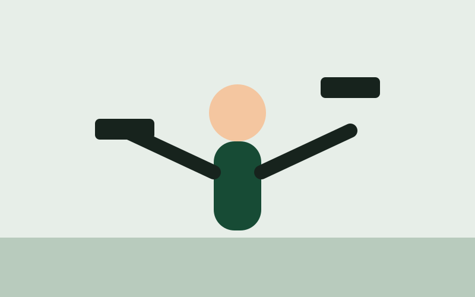

Harjoitusliikkeet
Tutustu kuntosaliharjoittelun perusliikkeisiin ja niiden suositeltuihin sarjoihin ja toistoihin.

| Liike | Lihasryhmä | Sarjat | Toistot |
|---|---|---|---|
| Jalkakyykky | Reidet ja pakarat | 3 | 8–12 |
| Penkkipunnerrus | Rinta ja ojentajat | 3 | 8–12 |
| Ylätalja | Selkä ja hauikset | 3 | 10–12 |
| Pystypunnerrus | Hartiat | 3 | 8–12 |